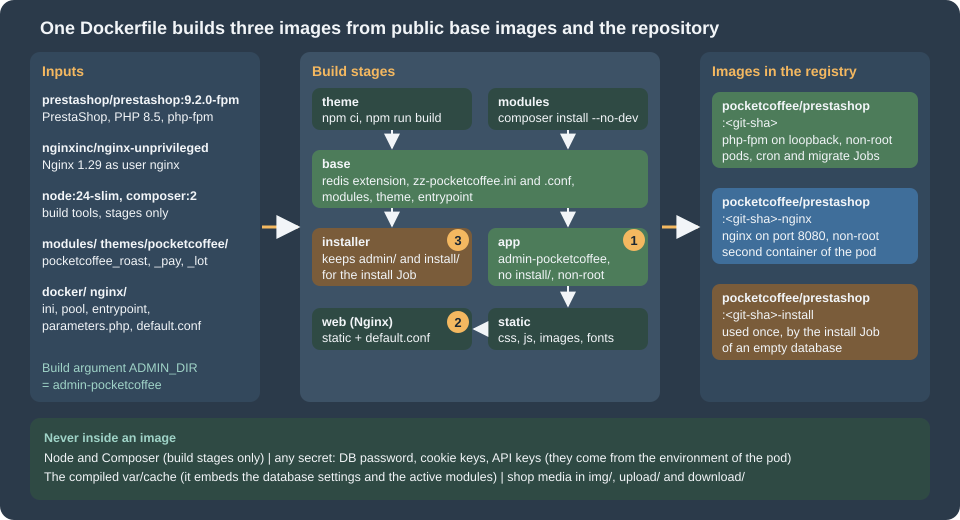

Cloud: Production Container Image
|
This content was generated with the assistance of AI and should be verified against the official documentation before being relied on in production. |
This page was written against PrestaShop 9.2.0 on the official image prestashop/prestashop:9.2.0-fpm (Debian 12, PHP 8.5.12,
digest beginning sha256:57c51145baa0), Nginx 1.29.8 from nginxinc/nginx-unprivileged, the PECL extension phpredis 6.3.0, Node 24.21 and
Composer 2 for the build stages, MySQL 8.4.11 for the runs, and Docker 29.9.2. It was checked on 2026-10-29. It is the third of ten
pages on running PrestaShop on a cluster, and it names no prices.
A cluster does not run a shop the way a server does. Every pod must start from the same immutable image, with nothing written
into it by hand, and every secret must arrive from outside. The official PrestaShop image was built for the opposite case, a
single container that installs itself on first start and then keeps its configuration in its own file system. This page builds the
image that a cluster needs, step by step, and every listing on it was built and run (what could not be run is listed at the end).
The running example is Pocket Coffee, the fictitious specialty-coffee shop of this section, which moves www.pocketcoffee.example
to an EKS cluster in eu-west-1. The architecture is on Cloud: Reference Architecture;
the writable paths are on Cloud: Shared Media and Writable Paths;
the Helm chart that runs this image is on Cloud: EKS Infrastructure and Helm Deployment.
Container fundamentals are linked, not repeated: Dockerfile fundamentals,
build cache and multi-stage builds and
image best practices and security.
The official image, and why a cluster cannot use it as it is
The prestashop/prestashop image (source repository PrestaShop/docker) packages a release of the shop with PHP. The
-fpm variant runs php-fpm instead of Apache. The table lists what it does, as read from the entrypoint script
/tmp/docker_run.sh and from the running container, and what that means for a pod. Its environment variables and the
problems of the first start are on
Installation and Local Environments; this table is only about the production gap.
| What the 9.2.0 image does | Why that suits a single container | Why a cluster cannot use it as it is |
|---|---|---|
The shop is in |
A volume on |
Every pod would do its own first start on its own copy of the shop, and nothing would keep the copies in step. Sharing one volume on |
|
One container, one database, one install. |
An installer run per pod would race on the same empty database. The generated file holds the secrets of that pod only; a second pod would not have its cookie keys, so every customer and administrator cookie would fail on it. |
The installer renames |
Obscurity for free. |
The random name exists in one pod. The Nginx container, the other pods and the next release do not know it. |
php-fpm listens on |
Simple; the web server container on the same Docker network reaches it. |
In a cluster any pod can send FastCGI requests to a PHP-FPM that listens on the pod address, and FastCGI executes any script path it is given. It must listen on loopback and run as a non-root user. |
OPcache is on, with |
Right for development. |
Sessions in Valkey and the SQL cache in Memcached need the extensions; a configuration file that reads |
The image keeps its build toolchain ( |
Convenient to compile an extension. |
A larger attack surface than a runtime needs. Scan the final image, see the Docker section on image security linked above. |
There is no web server in the |
Pair it with your own Nginx. |
That is the pod design of this section: Nginx and php-fpm are two containers of one pod. |
Source: PrestaShop/docker: Dockerfiles and entrypoint, Docker Hub: prestashop/prestashop and PrestaShop devdocs: Installing PrestaShop with Docker
So the production image is built on top of the official one but never started the official way. It keeps what is valuable in it (the release, the right PHP extensions at the right versions, a tested layout) and replaces the entrypoint, the configuration, the user and the folders. Two ways exist to get there:
-
Extend the official image (what this page does).
FROM prestashop/prestashop:9.2.0-fpm, pin the tag (a full version tag such as9.2.0-fpmis what existed on the check date; the9.2.0-8.x-fpmpattern does not), and change only what a cluster needs. Upgrading PrestaShop is a new tag in oneARG. The cost is what the base brings: Debian 12, a toolchain you did not choose and a size of 1.86 GB. -
Build your own from
php:8.5-fpmwith the extensions listed on the installation page and the release package. You choose every layer, and you take over the release download and its verification, the extension list for every upgrade and the knowledge of which files the shop expects (for instance, that the 9.2.0 release package ships nocomposer.json, see below). This page did not build that variant; the stages below work the same way on top of it, and the installation page lists the extensions and settings it needs.
One Dockerfile, three images

The Dockerfile has seven stages and three build targets, which become three tags in one ECR repository:
| Target | Tag | Used by |
|---|---|---|
|
|
The container |
|
the same repository, tag |
The container |
|
the same repository, tag |
The Job |
The build targets are called app, web and installer; the tags are <git-sha>, <git-sha>-nginx and <git-sha>-install, which is what the
chart of the Helm page expects (image.nginxTagSuffix and image.installTagSuffix). <git-sha> is the full commit SHA, so the tag of an image is
the same string as github.sha in the release workflow and as image.tag in the chart values. The two runtime tags are built from the same commit, so the code that Nginx serves as static files and the code that PHP
executes cannot differ. The suffix tags keep the three images in one repository and one lifecycle policy; the repository
settings are on Container registry on AWS.
Why Nginx gets its own image and not the files through a shared volume: the shop’s PHP files must not be reachable from a second place, a shared code volume is a writable thing that every pod can change, and a copy of the static files (2,775 files, 89 MB in the test) is small. Nginx never reads a PHP file: it passes the script path to php-fpm, which has the file (see the Nginx section).
The repository layout
pocketcoffee-prestashop-image/
Dockerfile # seven stages, three targets
.dockerignore # .git, node_modules, tests, *.md, *.zip
docker/
entrypoint.sh # checks the environment, warms the cache, runs php-fpm
parameters.php # becomes app/config/parameters.php: reads the environment, stores nothing
php/zz-pocketcoffee.ini # OPcache and session settings
php-fpm/zz-pocketcoffee.conf
nginx/default.conf # the server block, with @ADMIN_DIR@ replaced at build
modules/
pocketcoffee_roast/ # the three modules of the shop, with composer.json and composer.lock where needed
pocketcoffee_pay/
pocketcoffee_lot/
themes/pocketcoffee/ # child theme sources: package.json, package-lock.json, config/theme.yml, templatesThe two lock files, composer.lock for every module that has a composer.json and package-lock.json for the theme, are what
make two builds of the same commit install the same dependencies. Commit them. (The placeholder modules of the test had no
dependencies, so Composer ran without a lock file and said so; a real build must not.)
The Dockerfile
# syntax=docker/dockerfile:1
ARG PS_IMAGE=prestashop/prestashop:9.2.0-fpm
ARG NGINX_IMAGE=nginxinc/nginx-unprivileged:1.29-alpine
ARG ADMIN_DIR=admin-pocketcoffee
# ---- Stage 1: build the theme assets. Node never reaches an image that is shipped.
FROM node:24-slim AS theme
WORKDIR /src/pocketcoffee
COPY themes/pocketcoffee/package.json themes/pocketcoffee/package-lock.json ./
RUN npm ci --no-audit --no-fund
COPY themes/pocketcoffee/ ./
RUN npm run build && rm -rf node_modules
# ---- Stage 2: install the Composer dependencies of the modules. Composer never reaches a shipped image either.
FROM ${PS_IMAGE} AS modules
COPY --from=composer:2 /usr/bin/composer /usr/local/bin/composer
WORKDIR /build
COPY modules/ ./modules/
RUN set -eux; \
for dir in modules/*/; do \
if [ -f "${dir}composer.json" ]; then \
composer install --working-dir="${dir}" --no-dev --no-interaction --no-progress \
--prefer-dist --optimize-autoloader --classmap-authoritative; \
fi; \
done
# ---- Stage 3: everything that does not depend on the shop's identity.
FROM ${PS_IMAGE} AS base
USER root
RUN set -eux; \
pecl install redis </dev/null; \
docker-php-ext-enable redis; \
rm -rf /tmp/pear
COPY docker/php/zz-pocketcoffee.ini /usr/local/etc/php/conf.d/zz-pocketcoffee.ini
COPY docker/php-fpm/zz-pocketcoffee.conf /usr/local/etc/php-fpm.d/zz-pocketcoffee.conf
COPY --from=modules --chown=www-data:www-data /build/modules/ /var/www/html/modules/
COPY --from=theme --chown=www-data:www-data /src/pocketcoffee/ /var/www/html/themes/pocketcoffee/
COPY --chmod=0755 docker/entrypoint.sh /usr/local/bin/pc-entrypoint.sh
ENTRYPOINT ["/usr/local/bin/pc-entrypoint.sh"]
CMD ["php-fpm"]
# ---- Target "installer": the same image with admin/ and install/ still in place, for the one-off install Job.
FROM base AS installer
ENTRYPOINT ["docker-php-entrypoint"]
CMD ["php", "-v"]
# ---- Target "app" (default): the production php-fpm image.
FROM base AS app
ARG ADMIN_DIR
WORKDIR /var/www/html
RUN set -eux; \
mv admin "${ADMIN_DIR}"; \
rm -rf install; \
find modules -path '*/src/Entity/index.php' -type f -delete; \
mkdir -p var/cache var/logs; \
chown -R www-data:www-data var
COPY --chown=root:root --chmod=0444 docker/parameters.php app/config/parameters.php
USER www-data
# ---- Stage: the files Nginx serves, copied out of the app image.
FROM app AS static
USER root
RUN set -eux; \
mkdir /static; \
cd /var/www/html; \
find . \( -path ./var -o -path ./vendor -o -path ./src -o -path ./tools -o -path ./app \) -prune -o \
-type f \( -name '*.css' -o -name '*.js' -o -name '*.map' -o -name '*.png' -o -name '*.jpg' -o -name '*.jpeg' \
-o -name '*.gif' -o -name '*.svg' -o -name '*.webp' -o -name '*.avif' -o -name '*.ico' \
-o -name '*.woff' -o -name '*.woff2' -o -name '*.ttf' -o -name '*.eot' -o -name '*.otf' \
-o -name 'robots.txt' \) -print0 \
| xargs -0 cp --parents -t /static
# ---- Target "web": the Nginx container of the pod.
FROM ${NGINX_IMAGE} AS web
ARG ADMIN_DIR
COPY --from=static /static/ /var/www/html/
COPY nginx/default.conf /etc/nginx/conf.d/default.conf
USER root
RUN sed -i "s#@ADMIN_DIR@#${ADMIN_DIR}#g" /etc/nginx/conf.d/default.conf
USER nginxSource: Docker: Multi-stage builds and Dockerfile reference
The stages, in the order Docker runs them:
-
themebuilds the child theme with Node 24 and removesnode_modules. Node reaches no shipped image. -
modulesrunscomposer install --no-dev --classmap-authoritativein every module that has acomposer.json. Composer is copied in from the officialcomposer:2image and stays in this stage. -
baseadds what does not depend on the shop: the PECL extensionredis(phpredis, for sessions in Valkey), the PHP and PHP-FPM settings, the modules, the theme and the entrypoint. -
installerisbasewith the entrypoint reset to the plain PHP one. The officialadmin/andinstall/are still there. -
apprenames the admin folder, removesinstall/, deletes theEntity/index.phpguard files (explained below), installsparameters.phpread-only and drops towww-data. -
staticcopies the files that a browser downloads out ofapp. -
webis Nginx with those files and the server block.
Build and tag all three from one commit (BuildKit, see BuildKit and Buildx):
SHA=$(git rev-parse HEAD) # the full commit SHA, as the release workflow's github.sha
REPO=123456789012.dkr.ecr.eu-west-1.amazonaws.com/pocketcoffee/prestashop
docker buildx build --target app -t "$REPO:$SHA" .
docker buildx build --target web -t "$REPO:$SHA-nginx" .
docker buildx build --target installer -t "$REPO:$SHA-install" .Source: Docker: docker buildx build
The listing was built with these three --target options, with --tag names of a local test, and produced images of 1.91 GB
(app), 138 MB (web) and 1.86 GB (installer). The app image adds 45 MB to the official one, almost all of it the shop’s
renamed and cleaned directories. The two large images share every layer below the last four, so they cost little extra to
store and to pull.
The admin folder
PrestaShop’s back office lives in a folder under the shop root. The release package names it admin; the installer renames it
to a random name so that /admin/ is not a known address. In a cluster the name must be the same in every pod, in the
Nginx container, and in the next release, so it is fixed once, at build, with mv admin "${ADMIN_DIR}". Pocket Coffee uses
admin-pocketcoffee, so the back office is at https://www.pocketcoffee.example/admin-pocketcoffee/.
Three facts, read from the 9.2.0 source and observed, explain why the rename belongs in the image and why it comes before anything else:
-
The installer does the rename itself.
Install::finalize()renamesadmin/to a random name if the folderadmin/exists, and then installs the bundle assets into that folder. Ifadmin/does not exist it assumes the folder isadmin-devand the assets step fails. That is why the install Job runs from theinstallertarget, whoseadmin/is untouched; the rename it performs happens in the Job’s own file system and is thrown away with the Job. The run in the test printed "The admin folder was renamed into admin831ktoytef8kjuta662/" and "The install/ folder was removed.", and left the database installed. Nothing in the database records the folder name. -
The name is baked into the Symfony container. The kernel finds the admin folder by looking for a first-level folder whose
index.phpdefinesPS_ADMIN_DIR, and stores it as the parameterprestashop.admin_dirof the compiled container (with the existence of that folder as a cache resource). A container compiled with another name points to a folder that is not there. The compiled container lives in the pod’svar/cache, created after the rename, so the order is safe; the point is that a cache from a different image must never be reused. -
The Nginx server block needs the name too. It has a
location /admin-pocketcoffee/that falls back to that folder’sindex.php. The same build argument fills both, withsedin thewebtarget.
The name is not a secret. Anyone who sees a back-office asset URL has it, and it appears in the redirects of the login page. Treat it as a way to keep scanners off the log, not as access control: restrict the path in the load balancer, WAF or Gateway rules, as described on Cloud: Cache, Sessions and the Back Office in a Cluster and Security. Because the name is baked into the image, changing it is a release, and a single name for staging and production avoids two images.
The probe results of the test show the effect: /admin-pocketcoffee/ answered 302 to the login page, and /admin/ answered 404
from the shop.
Modules and the theme
The files are part of the image: COPY modules/ ./modules/, a Composer install for each module that has dependencies, and the
theme built in its own stage. Three details matter.
-
--no-dev --classmap-authoritative. The module’s autoloader then knows every class and never searches the file system. Composer’s documentation recommends this for production; it is safe because the image never changes. -
A module is installed in the database, not in the image. Copying a folder into
modules/makes a module present, not installed. The installation, its database tables, its hooks and its configuration are rows in the database, made once per database by a command, which is a Job and not part of the build (the build has no database):# In the Job pocketcoffee-migrate, with the same image and the migrate user (see the Helm page) php -d memory_limit=-1 bin/console --env=prod prestashop:module install pocketcoffee_roast php -d memory_limit=-1 bin/console --env=prod prestashop:module install pocketcoffee_pay php -d memory_limit=-1 bin/console --env=prod prestashop:module install pocketcoffee_lot php -d memory_limit=-1 bin/console --env=prod prestashop:module:list # | Name | Version | Status | # | pocketcoffee_lot | 1.0.0 | Enabled | # | pocketcoffee_pay | 1.0.0 | Enabled | # | pocketcoffee_roast | 1.0.0 | Enabled |installon an installed module performs an upgrade (the scriptupgrade/upgrade-x.y.z.phpruns when the version number was raised), which makes the same Job safe to repeat on every release; the other actions (enable,disable,reset,configure,uninstall,delete) are described on CLI Commands. The Job always needs--env=prodand a raised memory limit (next section). The three commands above ran in the test against a MySQL 8.4 database from a root file system that was read-only, and each printed "Install action on module … succeeded". They also logged, as an error, "Could not write into module folder …/vendor": the installer tries to write an Apache.htaccessfile into the module’svendor/folder (HtaccessFolderGuard), which is useless behind Nginx and which a read-only file system refuses. The install still succeeds. Release rollback and the order of module upgrades are on Cloud: Releases and Upgrades. -
The Module Manager of the back office cannot add code. An administrator who installs or updates a module from the back office writes into
modules/of one pod, which is read-only and which the next pod does not share. In production the Module Manager and the theme importer are disabled or ignored and every module change is a new image. See Cloud: Cache, Sessions and the Back Office in a Cluster.
The theme is a folder in themes/. Its assets are built at image build time (npm ci, npm run build; the Hummingbird
sources need Node 24, see Themes: Hummingbird and Classic). Which theme a
shop uses is again a database value (the theme_name of the shop row), set by bin/console prestashop:theme:enable <name>, which
is one more line for the migrate Job. In the test the command could not be confirmed: it answered "The selected theme is invalid"
for the placeholder theme (which has only a theme.yml) and an error about a missing language context for the installed
classic theme, so this page documents the command from the source and the console reference, and you must run it against your
real theme in a staging environment before relying on it.
One more build step is needed for a read-only shop. When the Symfony container of the back office is compiled, PrestaShop
deletes the files src/Entity/index.php of every active module, because API Platform would execute their exit
statements (PrestaShopExtension::preprendApiConfig). With a read-only root file system that deletion is a fatal error on the
first request of a pod: the test showed "Failed to remove file /var/www/html/modules/ps_accounts/src/Entity/index.php …
Read-only file system". The app stage therefore deletes exactly those files at build, so the pods never have to:
RUN find modules -path '*/src/Entity/index.php' -type f -deleteThe directory-listing guard those files provided is an Apache-era convention; Nginx serves no listing unless autoindex is on.
Autoloader and assets
The core autoloader cannot be rebuilt. The 9.2.0 image has no composer.json in the shop root (the release package removes it,
and the kernel says so in a comment), only composer.lock, so composer dump-autoload --classmap-authoritative has nothing to
work from. The generated vendor/composer files contain a class map of 13,844 classes, but it is not set as authoritative:
a class that is not in the map is looked up on disk. For the core the work is therefore done by OPcache, not by Composer; the
modules' own autoloaders are the ones you can optimize, which is why the modules stage uses --classmap-authoritative.
PrestaShop also has a legacy class index, var/cache/prod/class_index.php, built on the first request (it maps the classes of
classes/, controllers/ and override/). It is created in var/cache and lives with the pod, see the cache section.
The assets are already built. The back office assets are in the release package (admin/themes/new-theme/public/ and
admin/themes/default/public/), which the test served with status 200 from the renamed folder through Nginx, and the Hummingbird and
Classic assets are in their theme folders. The command assets:install, which the installer runs for the bundles, is only needed
on a fresh install, which is the install Job’s business, not the web image’s. Your own theme’s assets are built in the theme
stage. The only assets written at run time are the combined and compressed ones (CCC) under themes/<theme>/assets/cache/ and
the generated default images under img/, both covered in the next sections and on
Performance and Caching.
OPcache and PHP settings
; Production settings for the PrestaShop PHP-FPM image. Loaded after the settings of the base image.
; The code in the image never changes, so PHP never has to stat a file again.
opcache.validate_timestamps = 0
opcache.memory_consumption = 256
opcache.interned_strings_buffer = 32
opcache.max_accelerated_files = 40000
; Sessions in Valkey (phpredis). The values come from the environment of the pod.
session.save_handler = ${PHP_SESSION_HANDLER:-files}
session.save_path = "${PHP_SESSION_SAVE_PATH:-}"The image already enables OPcache with 256 MB and 20,000 files, so this file changes three OPcache settings, repeats the memory size so that the file stands on its own, and adds the session handler.
-
opcache.validate_timestamps = 0. The performance page measured no gain from it on a local SSD and explains that it matters on network storage. In a container it is a safety measure more than a speed-up: the files never change, so a check could only ever find a problem, and the setting removes onestatcall per file per request. The usual cost, that a deployment must reload PHP, does not exist here because a deployment replaces the pod. -
opcache.interned_strings_buffer = 32. The performance page measured 12.4 MB used of the image’s 16 MB after three front pages, so 16 is tight once the back office and your modules are loaded. -
opcache.max_accelerated_files = 40000. The tree of this image has 34,138 PHP files. A shop never loads all of them, but the setting is cheap and it keeps a large module set from filling the table. PHP rounds it up to the next prime it supports; checkopcache_get_status()as the performance page describes. -
Sessions through the environment. PHP expands
${NAME}and${NAME:-default}in.inifiles. The test confirmed that withPHP_SESSION_HANDLER=redisand a save path in the environment,ini_get()returned them, and that without them the handler staysfiles. Use this form only for non-secret values or for secrets that you inject through the pod environment; the behaviour of sessions, the Valkey endpoint and the back office are on Cloud: Cache, Sessions and the Back Office in a Cluster.
OPcache is off for the command line (opcache.enable_cli = 0), so every bin/console run in a Job compiles every file again.
That is normal and cheap next to the database work of a migration.
The PHP-FPM pool file is a second file in the image:
[global]
error_log = /proc/self/fd/2
[www]
; Only the Nginx container of the same pod can reach PHP-FPM: loopback, never 0.0.0.0.
listen = 127.0.0.1:9000
pm = static
pm.max_children = 8
pm.max_requests = 1000
request_terminate_timeout = 60s
ping.path = /fpm-ping
ping.response = pong
clear_env = no
catch_workers_output = yes
decorate_workers_output = noSource: PHP manual: FPM configuration
listen = 127.0.0.1:9000 is the most important line: it removes the FastCGI port from the pod network (the official image binds
all interfaces). pm = static with a fixed pm.max_children makes the memory of a pod predictable, which is what the Kubernetes
memory limit and the autoscaler need; the number 8 is a starting point to measure with the memory of your own pages, and the
sizing method is on Cloud: Autoscaling, Observability, Backups and Security.
clear_env = no is the image’s own setting and is what lets PHP workers see the environment of the container; without it the
workers would have none of the variables that the configuration reads. ping.path makes php-fpm answer /fpm-ping itself, which
the probe uses (see the Nginx section).
Removing install/
The install/ folder holds the web installer. The 9.2 installer removes it after a successful install, and the Docker
entrypoint removes it again afterwards, which fails because the folder is gone (the problem is described on
Installation and Local Environments); the change is documented in the
9.2 core updates. A
production image does not depend on that: rm -rf install in the app stage removes it at build, so no pod ever has it, whatever
happened to the database. The installer target keeps it for the one Job that needs it. In the test the probe /install/
answered 404 from the shop.
Running as a non-root user on a read-only file system
The app stage ends with USER www-data (uid and gid 33), and the web stage with USER nginx (uid 101). uid 33 is the owner
that the EFS access point of the shared volume uses (see Cloud: Shared Media and Writable Paths),
so the pods and the shared files agree on who owns what. Nginx comes from nginxinc/nginx-unprivileged, which listens on port
8080, because a non-root process cannot bind port 80. The test ran both containers with --read-only, --cap-drop=ALL and
--security-opt=no-new-privileges: PHP-FPM then runs as uid 33 with an empty capability set (CapEff: 0000000000000000), Nginx as
uid 101, and the shop worked. php-fpm prints a harmless notice, "'user' directive is ignored when FPM is not running as root".
With a read-only root file system the shop must be given every path it writes to. The paths below were found by running the
image read-only and exercising it: about 40 front-office URLs (home, categories, products, pages, the login page), the
back-office login and dashboard, three bin/console module installs and a module upgrade, while reading the error log.
The full analysis of which of them are per pod and which must be shared is on
Cloud: Shared Media and Writable Paths; this table is what the image needs.
| Path | Kind | What writes it |
|---|---|---|
|
|
PHP’s default session path, temporary uploads and the Nginx temporary files. |
|
|
The Symfony containers of the kernels, |
|
|
The Symfony log files. |
|
|
A JSON cache of each theme’s |
|
|
The combined and compressed assets (CCC). The first request failed with "Failed to create …/themes/hummingbird/assets/cache/". |
|
the shared volume |
The shop’s media. The test logged 1,760 warnings "Failed to open stream" from |
Paths that this test did not exercise (for example translations/, mails/, var/modules and the theme customization
screens) are not in the table; the writable-paths page covers them from the source. The excerpt of the Deployment that these paths,
the user and the probes make is below; the complete chart, with the helpers pc.* and the values file, is on the Helm page.
It was validated with kubeconform -strict against the Kubernetes 1.36 schemas.
apiVersion: apps/v1
kind: Deployment
metadata:
name: pocketcoffee-web
namespace: pocketcoffee
spec:
replicas: 2
selector:
matchLabels:
app.kubernetes.io/name: pocketcoffee-prestashop
app.kubernetes.io/instance: pocketcoffee
app.kubernetes.io/component: web
template:
metadata:
labels:
app.kubernetes.io/name: pocketcoffee-prestashop
app.kubernetes.io/instance: pocketcoffee
app.kubernetes.io/component: web
spec:
securityContext:
runAsNonRoot: true
runAsUser: 33
runAsGroup: 33
seccompProfile:
type: RuntimeDefault
containers:
- name: php-fpm
image: 123456789012.dkr.ecr.eu-west-1.amazonaws.com/pocketcoffee/prestashop:<git-sha>
envFrom:
- configMapRef:
name: pocketcoffee-env
- secretRef:
name: pocketcoffee-secrets
env:
- name: DB_USER
value: ps_app
- name: DB_PASSWD
valueFrom:
secretKeyRef:
name: pocketcoffee-secrets
key: DB_PASSWORD_APP
securityContext:
readOnlyRootFilesystem: true
allowPrivilegeEscalation: false
capabilities:
drop: ["ALL"]
resources:
requests:
cpu: 500m
memory: 768Mi
ephemeral-storage: 512Mi
limits:
memory: 1536Mi
ephemeral-storage: 1Gi
volumeMounts:
- { name: tmp, mountPath: /tmp }
- { name: var-cache, mountPath: /var/www/html/var/cache }
- { name: var-logs, mountPath: /var/www/html/var/logs }
- { name: config-themes, mountPath: /var/www/html/config/themes }
- { name: theme-assets-cache, mountPath: /var/www/html/themes/pocketcoffee/assets/cache }
- { name: shared, mountPath: /var/www/html/img, subPath: img }
- { name: shared, mountPath: /var/www/html/upload, subPath: upload }
- { name: shared, mountPath: /var/www/html/download, subPath: download }
- name: nginx
image: 123456789012.dkr.ecr.eu-west-1.amazonaws.com/pocketcoffee/prestashop:<git-sha>-nginx
ports:
- name: http
containerPort: 8080
securityContext:
readOnlyRootFilesystem: true
allowPrivilegeEscalation: false
capabilities:
drop: ["ALL"]
startupProbe:
httpGet: { path: /healthz, port: http }
periodSeconds: 5
failureThreshold: 24
readinessProbe:
httpGet: { path: /healthz, port: http }
periodSeconds: 10
volumeMounts:
- { name: nginx-tmp, mountPath: /tmp }
- { name: shared, mountPath: /var/www/html/img, subPath: img, readOnly: true }
- { name: shared, mountPath: /var/www/html/upload, subPath: upload, readOnly: true }
- { name: shared, mountPath: /var/www/html/download, subPath: download, readOnly: true }
volumes:
- { name: tmp, emptyDir: {} }
- { name: nginx-tmp, emptyDir: {} }
- { name: var-cache, emptyDir: { sizeLimit: 1Gi } }
- { name: var-logs, emptyDir: { sizeLimit: 128Mi } }
- { name: config-themes, emptyDir: { sizeLimit: 16Mi } }
- { name: theme-assets-cache, emptyDir: { sizeLimit: 128Mi } }
- name: shared
persistentVolumeClaim:
claimName: pocketcoffee-sharedSource: Kubernetes: Deployments and Kubernetes: emptyDir
Mounting the shared claim over img/ hides the img/ folder of the image (the logo placeholders, the folder skeleton). The
first deployment must seed the volume once, as the shared media page describes. The Nginx container mounts the same folders
read-only: it serves media files and never writes them. The startup probe allows 24 times 5 seconds for the
cache warm-up; the liveness probe, the PodDisruptionBudget and the topology spread are on the Helm page.
One more protection concerns the configuration file. The back office’s Performance page rewrites app/config/parameters.php when
you change the cache settings: PhpParameters::saveConfiguration() dumps the whole evaluated configuration, secrets included, with
var_export. On the image the file is owned by root and has mode 0444, so the write fails with an error and a literal copy of
the secrets is never written; the settings that the Performance page would write are environment variables of the release instead.
Runtime configuration: parameters.php and the entrypoint
The shop reads its configuration from app/config/parameters.php, in two places: the legacy bootstrap (config/bootstrap.php
turns the file into the constants _DB_SERVER_, _DB_PASSWD_, _COOKIE_KEY_ and others, through a cached copy
var/cache/<env>/appParameters.php that is refreshed only when the file is newer than the copy) and the Symfony container
(app/config/set_parameters.php loads the same file and sets each key as a container parameter). When the file is missing, the
second falls back to empty placeholders, which is why a shop without it fails at the database connection and not with a clear
message. The image’s file is a small piece of PHP that reads the environment:
<?php
/**
* app/config/parameters.php for a container: no value is stored in the image, every value comes
* from the environment of the pod (a Kubernetes Secret or ConfigMap). The file is read by the
* legacy bootstrap (config/bootstrap.php) and by the Symfony container (app/config/set_parameters.php).
*/
// getenv() on purpose: php.ini of the image has variables_order = "GPCS", so $_ENV is empty.
$required = static function (string $name): string {
$value = getenv($name);
if ($value === false || $value === '') {
throw new RuntimeException(sprintf('Required environment variable %s is not set', $name));
}
return $value;
};
$optional = static function (string $name, ?string $default = null): ?string {
$value = getenv($name);
return ($value === false || $value === '') ? $default : $value;
};
// The installer stores "%" as "%%" because the file is also a Symfony parameter source.
$escape = static fn (mixed $value): mixed => is_string($value) ? str_replace('%', '%%', $value) : $value;
$flag = static fn (string $name): bool => filter_var(getenv($name), FILTER_VALIDATE_BOOLEAN);
return [
'parameters' => array_map($escape, [
'database_host' => $required('DB_SERVER'),
'database_port' => $optional('DB_PORT', '3306'),
'database_name' => $required('DB_NAME'),
'database_user' => $required('DB_USER'),
'database_password' => $required('DB_PASSWD'),
'database_prefix' => $optional('DB_PREFIX', 'ps_'),
'database_engine' => 'InnoDB',
'mailer_transport' => 'smtp',
'mailer_host' => '127.0.0.1',
'mailer_user' => null,
'mailer_password' => null,
'secret' => $required('PS_SECRET'),
'cookie_key' => $required('PS_COOKIE_KEY'),
'cookie_iv' => $required('PS_COOKIE_IV'),
'new_cookie_key' => $required('PS_NEW_COOKIE_KEY'),
'api_public_key' => $required('PS_API_PUBLIC_KEY'),
'api_private_key' => $required('PS_API_PRIVATE_KEY'),
'ps_creation_date' => $required('PS_CREATION_DATE'),
'locale' => $optional('PS_LOCALE', 'en-US'),
'ps_caching' => $optional('PS_CACHING', 'CacheMemcached'),
'ps_cache_enable' => $flag('PS_CACHE_ENABLE'),
]),
];Five points about it:
-
getenv(), not$_ENV. The image’sphp.inisetsvariables_order = "GPCS", so$_ENVis empty.getenv()reads the process environment, andclear_env = noin the pool keeps that environment visible to the workers. -
The names follow the official image where one exists:
DB_SERVER,DB_PORT,DB_NAME,DB_USER,DB_PASSWDandDB_PREFIXare the variables thatPS_INSTALL_AUTOreads, so the same Secret feeds the install Job and the web pods. The new ones carry the prefixPS_. -
%is doubled. The installer writes every%as%%, and the bootstrap turns them back, because the file is also a Symfony parameter source. The$escapehelper does the same for values that come from the environment. -
Every key the installer writes is here: the database settings;
secret; the legacy cookie keyscookie_keyandcookie_iv; the encryption keynew_cookie_key; and the pairapi_public_keyandapi_private_key, a PEM key pair that the OAuth server of the Admin API uses (add both to the Secrets Manager secret).ps_creation_dateis a date, not a secret. -
The SQL cache switch is an environment variable,
PS_CACHE_ENABLE, because the back office can no longer write the file.ps_cachingdefaults toCacheMemcached; PrestaShop has no Valkey cache backend (the core ones are APCu, Memcache, Memcached and Xcache), so the shared SQL cache is ElastiCache for Memcached, which needs thememcachedextension (see the cache section) and is the subject of the cache page.
The environment comes from a Kubernetes Secret that the External Secrets Operator fills from AWS Secrets Manager
(the names are in the table), mapped as in this table. The ExternalSecret that produces the Secret is on the Helm page.
| Environment variable | parameters.php key |
Where the value lives |
|---|---|---|
|
|
Values of the release ( |
|
|
The user is a value of the release ( |
|
|
Secrets Manager |
|
|
Secrets Manager |
|
|
Secrets Manager |
|
|
The |
|
|
Values of the release ( |
The entrypoint adds the checks and the warm-up, then hands over:
#!/bin/sh
# Entrypoint of the production image: validate the configuration, then run the command.
set -eu
missing=""
for name in DB_SERVER DB_NAME DB_USER DB_PASSWD PS_SECRET PS_COOKIE_KEY PS_COOKIE_IV \
PS_NEW_COOKIE_KEY PS_API_PUBLIC_KEY PS_API_PRIVATE_KEY PS_CREATION_DATE; do
eval "value=\${$name:-}"
[ -n "$value" ] || missing="$missing $name"
done
if [ -n "$missing" ]; then
echo "pocketcoffee: missing environment variables:$missing" >&2
exit 64
fi
# One line per start in the pod log; it never prints a value.
echo "pocketcoffee: PrestaShop ${PS_VERSION:-unknown}, database ${DB_SERVER}:${DB_PORT:-3306}/${DB_NAME} as ${DB_USER}" >&2
# Compile the Symfony containers into var/cache (an emptyDir) before the first request. It needs the database,
# because the active modules are read from it. Twig templates are compiled lazily (--no-optional-warmers).
# PS_WARMUP=0 skips it; PS_WARMUP_APPS lists the kernels (add admin-api only if the Admin API is used).
if [ "${PS_WARMUP:-1}" = "1" ] && [ "$1" = "php-fpm" ]; then
start=$(date +%s)
for app in ${PS_WARMUP_APPS:-admin front}; do
php -d memory_limit=-1 /var/www/html/bin/console cache:warmup --env=prod --app-id="$app" \
--no-optional-warmers --no-interaction --quiet
done
echo "pocketcoffee: cache warmed in $(( $(date +%s) - start )) s" >&2
fi
exec "$@"It passes shellcheck, and the test ran it three ways: with a complete environment (it starts), with none (it prints
"pocketcoffee: missing environment variables: PS_SECRET PS_COOKIE_KEY …" and exits with status 64 before PHP starts, so a
pod with a missing Secret key fails at once with a clear line and never serves a broken shop), and with PS_WARMUP=0 for
Jobs. The entrypoint prints the host, database and user and never a secret.
Rotating a secret is a rollout: the values are read when PHP starts, and the cache described next stores them too. Pods must be restarted after a rotation, and the cookie keys must not be rotated casually (the operations page covers the procedure).
The cache: why it cannot be warmed at build
A natural idea is to run bin/console cache:warmup in the Dockerfile so that pods start fast. Three findings show that it does not
work, and what to do instead.
-
The console needs the database. A build has none. Running the warm-up with an unreachable
DB_SERVERfailed immediately with aPrestaShopExceptioninDbPDO::connect(), called fromShop::initialize(), because the legacy bootstrap thatbin/consoleloads looks up the shop by host name. -
The compiled container holds the secrets. After a warm-up with the test settings,
grepfound the database password invar/cache/prod/appParameters.phpand invar/cache/prod/admin/ContainerXXXX/AdminKernelProdContainer.php. A cache built at build time would copy the database password into a layer of the image, and one built with placeholder values would hold the placeholders. -
It also holds the list of active modules, which comes from the database (
prestashop.active_modulesis read when the container is compiled, and so are the services of those modules). A container compiled without the database would not know thatpocketcoffee_roastis active.
So the cache is built when the pod starts, in var/cache, an emptyDir, from the pod’s own environment and the live database.
That is the loop in the entrypoint: one cache:warmup per kernel, with these options.
-
--env=prodis not optional.bin/consoledefaults todevunlessSYMFONY_ENVis set, and would build a different, debug-mode cache that the web requests never use. -
-d memory_limit=-1is not optional either. The image’smemory_limitof 512 MB is too small for the compile: the first warm-up of the test died with "Allowed memory size of 536870912 bytes exhausted" in the Symfony compiler. (The official entrypoint also runs the installer withmemory_limit=-1.) -
--app-idselects the kernel:admin(the default),frontandadmin-api. Each kernel has its own container and its own directory undervar/cache/prod/. The Admin API kernel is warmed only if you use the Admin API (PS_WARMUP_APPS="admin front admin-api"). -
--no-optional-warmersskips the Twig template warmer. This is the trade-off of the section; the test measured it on an 8-CPU Docker VM that other builds were using at the same time, so the times are noisy and the sizes are the reliable numbers:
| Warm-up of one kernel | Admin | Front | Size of var/cache afterwards |
|---|---|---|---|
With the optional warmers (all Twig templates compiled) |
29.7 s |
47.4 s |
257 MB |
With |
3.7 s |
6.8 s |
27 MB |
Without the optional warmers a pod starts in about 5 to 10 seconds and compiles each Twig template on first use, which spreads
the cost over the first requests of each pod. With them the pod needs up to a minute and 800 MB for three kernels before it
serves anything. Pods start often (every deployment, every scale-up), so the image uses --no-optional-warmers, and the readiness
and startup probes of the excerpt make sure that no traffic arrives before the container is ready. (After the test traffic,
var/cache was 58 MB.)
The warm-up is also why the cache must not be cleared from the back office in production: the Symfony cache of one pod is not the cache of the others, see Cloud: Cache, Sessions and the Back Office in a Cluster. A new release replaces the pods, which is the only cache clear a cluster needs.
Jobs are different. A Job runs one bin/console command in a container, and the command builds the admin cache itself when
var/cache is empty; the warm-up of the entrypoint does not apply because it runs only before php-fpm. Give the Job an emptyDir
for var/cache and var/logs as the web pods have.
The memcached extension is the one thing the Dockerfile above does not install, because it needs system libraries. If the
Memcached option is chosen, add this RUN to the base stage, before the COPY lines, and rebuild:
RUN set -eux; \
apt-get update; \
apt-get install -y --no-install-recommends libmemcached-dev libsasl2-dev zlib1g-dev; \
pecl install memcached </dev/null; \
docker-php-ext-enable memcached; \
apt-mark manual libmemcached11 libmemcachedutil2 libsasl2-2; \
apt-get purge -y --auto-remove libmemcached-dev libsasl2-dev zlib1g-dev; \
rm -rf /var/lib/apt/lists/* /tmp/pearSource: PHP manual: Memcached installation and php-memcached
This block was not built on the check date. In the test environment apt-get update on the Debian 12 (bookworm) base of the
official image, and on debian:bookworm-slim, failed with "At least one invalid signature was encountered" for all three
repositories, so no package could be installed (the official php:8.4-fpm image, which is based on Debian 13, updated normally).
The phpredis extension does not need system libraries and builds with pecl alone, which is why the Dockerfile above installs
that one and was built and run. Build the memcached block yourself, and check that php -m lists memcached before relying on it.
The Nginx image
The web target is Nginx with the files a browser fetches and this server block. Nginx does not have the PHP files; it passes
the script path to php-fpm on loopback, and php-fpm reads the file from its own container.
# Nginx container of the pocketcoffee-web pod: static files from its own image, PHP to php-fpm on loopback.
server {
listen 8080;
server_name _;
root /var/www/html;
index index.php;
client_max_body_size 16M;
server_tokens off;
error_page 404 /index.php?controller=404;
# Probe target: answered by php-fpm itself (ping.path), so it fails with 502 until PHP is ready, warm-up included.
location = /healthz {
access_log off;
include fastcgi_params;
fastcgi_param SCRIPT_NAME /fpm-ping;
fastcgi_param SCRIPT_FILENAME /fpm-ping;
fastcgi_pass 127.0.0.1:9000;
}
# Product and category image URLs
rewrite ^/(\d)(-[\w-]+)?/.+\.(jpe?g|png|webp|avif)$ /img/p/$1/$1$2.$3 last;
rewrite ^/(\d)(\d)(-[\w-]+)?/.+\.(jpe?g|png|webp|avif)$ /img/p/$1/$2/$1$2$3.$4 last;
rewrite ^/c/([\w.-]+)/.+\.(jpe?g|png|webp|avif)$ /img/c/$1.$2 last;
# Webservice
rewrite ^/api/?(.*)$ /webservice/dispatcher.php?url=$1 last;
location / {
try_files $uri /index.php$is_args$args;
}
location /@ADMIN_DIR@/ {
try_files $uri /@ADMIN_DIR@/index.php$is_args$args;
}
location ~ /\.(?!well-known) { deny all; }
location ~ ^/(app|bin|cache|classes|config|controllers|docs|localization|override|src|tests|tools|translations|var|vendor)/ { deny all; }
location ~ ^/modules/.*/vendor/ { deny all; }
location ~ \.(log|tpl|twig|sass|yml)$ { deny all; }
location ~ ^/modules/.*(\.(php|log|txt|lock|json|yml|yaml|tpl|twig)|config\.xml|config_[a-z]+\.xml)$ { deny all; }
location ~ ^/(composer\.lock|\.git.*|\.env.*)$ { deny all; }
location /img { location ~ \.php$ { deny all; } }
location /upload { location ~ \.php$ { deny all; } }
location ~ [^/]\.php(/|$) {
fastcgi_split_path_info ^(.+?\.php)(/.*)$;
include fastcgi_params;
# The PHP files live in the php-fpm container, not here.
fastcgi_param SCRIPT_FILENAME /var/www/html$fastcgi_script_name;
fastcgi_param PATH_INFO $fastcgi_path_info;
fastcgi_param HTTPS $http_x_forwarded_proto_https;
fastcgi_index index.php;
fastcgi_read_timeout 60s;
fastcgi_pass 127.0.0.1:9000;
}
}
map $http_x_forwarded_proto $http_x_forwarded_proto_https {
default "";
https on;
}The block is the one of Installation and Local Environments (rewrites, denied paths and the extra rules that the documented sample lacks), with the changes the pod needs:
-
Port 8080, because the unprivileged image cannot bind 80, and
server_tokens off. -
The FastCGI target is
127.0.0.1:9000: the second container of the same pod, not a Service name. -
SCRIPT_FILENAME /var/www/html$fastcgi_script_name, because the PHP files are in the other container. The documented sample’stry_files $fastcgi_script_name =404would return 404 for every script here, since the file is not on Nginx’s disk. A request for a script that does not exist reaches php-fpm and gets its "File not found" 404 (/foo.phpreturned 404 in the test). -
try_files $uri /index.php$is_args$argswithout$uri/. The Nginx image has noindex.phpin its folders, so a directory request such as/matched a directory and, with no index file, answered 403. Without$uri/it goes to the front controller. -
The
HTTPSparameter fromX-Forwarded-Proto. The load balancer terminates TLS and sets that header. If PHP does not see the request as secure, a shop installed with SSL redirects forever. Themapat the end converts the header to PHP’son. Only trust the header behind the load balancer; the Nginx container must not be reachable any other way. -
/healthzis answered by php-fpm, through itsping.path, so it returns502while php-fpm is not running (during the warm-up) and200 pongwhen it is. That is the check a readiness probe wants: Nginx alone being up proves nothing. The test showed the sequence 502, 502, 200 on a fresh pod. Route only the shop’s paths from the load balancer, so that the path is reachable only inside the cluster. -
The admin folder is
@ADMIN_DIR@in the file andadmin-pocketcoffeein the image (sedin thewebtarget).
The static stage copies only files that a browser can use: style sheets, scripts, images, fonts and robots.txt, from every
folder except var, vendor, src, tools and app. That is why no template, configuration file or PHP script is in the
Nginx image, and the deny rules above are a second layer, not the only one.
The status codes the pod pair returned on the test shop (installed for pocketcoffee.example, requests sent with that
Host header and X-Forwarded-Proto: https):
| Request | Status | Meaning |
|---|---|---|
|
200 |
Front page, from a read-only root file system and a cache warmed in 5 to 10 s. |
|
200 |
|
|
302 |
To the login page. The login and the dashboard worked after logging in with the test administrator. |
|
404 |
They do not exist in the image. |
|
403 |
Denied paths. |
|
403 |
Templates are not served. |
|
403 |
The added module rules. |
|
401 |
The Webservice, without a key. |
|
404 |
A script that does not exist: php-fpm’s own answer. |
|
200 |
Static files from the Nginx image. |
For the web server’s own tuning (compression, headers, expiry), see the Nginx section of Performance and Caching; the CDN and the WAF rules in front of it are on the operations page.
Checking the image before it ships
Four checks catch most mistakes, and all four ran in the test. They need no cluster and no registry.
# 1. The configuration files parse (no PHP-FPM or Nginx process is started)
docker run --rm --entrypoint php-fpm pocketcoffee-test:app -t
docker run --rm --tmpfs /tmp --entrypoint nginx pocketcoffee-test:web -t
# 2. The container really is non-root and read-only: start the pair the way the pod does
docker run -d --name pc-fpm --read-only --cap-drop=ALL --security-opt=no-new-privileges \
--tmpfs /tmp --tmpfs /var/www/html/var/cache:uid=33,gid=33,size=1g \
--tmpfs /var/www/html/var/logs:uid=33,gid=33 \
--tmpfs /var/www/html/config/themes:uid=33,gid=33 \
--tmpfs /var/www/html/themes/pocketcoffee/assets/cache:uid=33,gid=33 \
--env-file ./test.env pocketcoffee-test:app
docker run -d --name pc-nginx --network container:pc-fpm --read-only --tmpfs /tmp pocketcoffee-test:web
# 3. The entrypoint refuses to start without its secrets (exit status 64)
docker run --rm pocketcoffee-test:app; echo "exit status $?"
# 4. A page through Nginx, with the headers the load balancer adds
docker exec pc-nginx wget -S -q -O /dev/null --header 'Host: www.pocketcoffee.example' \
--header 'X-Forwarded-Proto: https' http://127.0.0.1:8080/healthzSource: Docker: docker container run
The second command needs a database that the settings in test.env can reach (a throwaway MySQL 8.4 container on the same
Docker network, with the installer target run once against it, was used in the test) and a file with the test-only values of the
variables above, never production values. --network container:pc-fpm puts Nginx in the network namespace of the php-fpm
container, which is what two containers of a pod share, so 127.0.0.1:9000 works in the test as it does in the cluster. (The
test used a multi-line PEM key through -e, because an --env-file cannot hold one; the keys of the test were generated by the
installer and are not in this page.)
Pitfalls
| Symptom | Cause and fix |
|---|---|
The first request returns 500 with "Failed to create … Read-only file system" |
A path the shop writes is not an |
The first request returns 500 with "Failed to remove file …/src/Entity/index.php" |
The Symfony container was compiled by a pod with a read-only file system. Delete those files at build, as the |
|
Run it with |
A warm-up in the Dockerfile fails with |
|
Everyone is logged out after a deployment, or the back office rejects every token |
The cookie keys differ between pods or releases. They come from the Secret, never generated per pod. |
A shop installed with SSL redirects in a loop behind the load balancer |
PHP does not know the request is HTTPS: pass |
A custom configuration file reads |
|
The back office reports an error when saving the Performance page |
|
|
The folder was renamed in the image: use |
The cache of a previous image is reused after a rollout |
|
What was run and what was not
Run on 2026-10-29 on Docker 29.9.2 (arm64), in a scratch directory outside the repository, with a placeholder module set
(three modules, one with a composer.json and a PSR-4 class) and a placeholder theme (a package.json whose build script writes
a style sheet):
-
docker buildof the three targets; the images are 1.91 GB, 138 MB and 1.86 GB. Thethemeandmodulesstages rannpm ciandcomposer install. -
php-fpm -tandnginx -tinside the built images (Nginx needs a writable/tmp: with a read-only root file system and no/tmpmountnginx -tfailed with "mkdir() /tmp/proxy_temp failed"). -
An install with the
installertarget against a throwaway MySQL 8.4.11 (the CLI installer, in 30 seconds), then the production pair against the same database: read-only root file system, no capabilities, uid 33 and 101, a crawl of about 40 front-office URLs, the back-office login and dashboard,prestashop:module installfor the three modules,prestashop:module upgradeandprestashop:module:list, the status table above, the entrypoint’s failure path andshellcheckof the script. -
kubeconform -stricton the Deployment excerpt.
Not run: the memcached extension block (apt could not verify the Debian 12 repositories on the check date), a real theme and
real modules (the placeholders passed composer and npm but not prestashop:theme:enable), the build from php:8.5-fpm and the
release package, a cluster, ECR and the External Secrets Operator. The images, containers and network of the test were removed
afterwards.